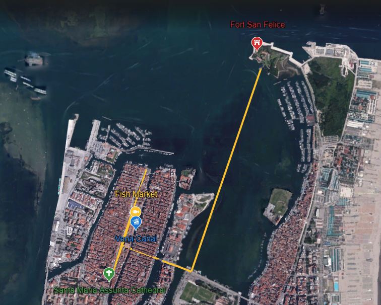

CHIOGGIA
Little Venice

CHIOGGIA
Chioggia, a charming coastal town in Veneto, is a hidden gem often compared to nearby Venice. With its picturesque canals, pastel-colored houses reflecting on the water, and stone bridges, it offers an enchanting and authentic atmosphere. The fish market is a spectacle of boats, fresh seafood and colorful stalls. Sandy beaches along the coast invite relaxation and sunset strolls, while Isola della Grazia provides a tranquil escape from the city's fuss. With its delightful cuisine and timeless beauty, Chioggia promises an unforgettable experience.
San Felice Fort
Built around 1385 on a small island at the entrance of the lagoon, Fort San Felice in Sottomarina di Chioggia was strategically important for safeguarding the lagoon, especially after the War of Chioggia.
Over the years, it underwent several reconstructions, resulting in its current star-shaped structure.
Offering a 360-degree view of the lagoon and the sea, it boasts remarkable architectural features such as the Istrian stone portal designed by Andrea Tirali in the early 1700s.
Abandoned for a long time, it gained attention through FAI's surveys to become one of the top 10 places to save in Italy in 2016.
Since then, guided tours organized by the Fort San Felice Committee have made it accessible to visitors, offering stunning natural views and unique sunset panoramas, ideal for walking or cycling around the fort.
Round Trip
Departure
Return
Cathedral Square
The Piazza del Duomo in Chioggia, Italy, is the vibrant center of this historic city in the Veneto region.
Surrounded by centuries-old buildings, it features the stunning Cathedral of Santa Maria Assunta at its core, showcasing exquisite Gothic architecture and sacred artworks.
The square is very active, especially during the weekly market offering local produce and traditional goods.
Cafes, restaurants, and shops line its sides, inviting residents and visitors to experience Chioggia's daily life.
Hosting religious festivals and cultural events year-round, the square gives off a charming atmosphere and historical appeal, making it a must-visit destination for exploring Chioggia.
Arrival
Departure
Fish Market
Chioggia, known for its rich fishing heritage, offers visitors a unique experience at its Fish Market.
This vibrant hub showcases a diverse array of freshly caught fish and local seafood delicacies, reflecting the region's maritime tradition.
Along the lively atmosphere, visitors can observe the lively exchanges between fishermen and buyers, adding an authentic touch to their visit.
The market's charm lies not only in its abundant offerings but also in the opportunity it provides to witness the age-old traditions and skills of the local fishing community.
A visit here promises a memorable immersion into Chioggia's maritime culture.
Arrival
Departure
Vena Canal
Often likened to Venice's Grand Canal, Chioggia's Vena Canal stands as one of the city's principal aquatic arteries. Its tranquil waters offer beautiful views of colorful houses adorning its banks, evoking a timeless charisma. Embarking on a boat excursion along its path allows visitors to immerse themselves in Chioggia's rich maritime heritage while uncovering hidden gems along the way. Whether admiring the architectural wonders or simply admiring the serene ambiance, a journey along the Vena Canal promises an unforgettable experience, uncovering the essence of this gem.
Arrival
Departure
The Photos

Contact Us
To Sum Up
Per Person
Tour Duration
Walk Difficulty
Local Tour Guide
Chioggia, IT
Phone: +39 041 553 4811
Email: traveltochioggia@instmail.uk